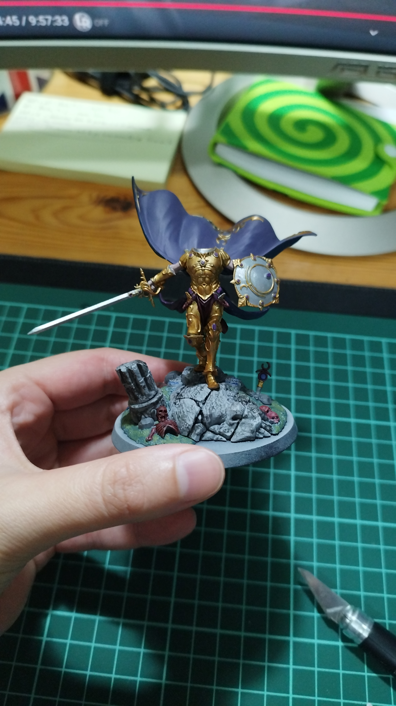

Hi there! Glad to see you here. I think it's pretty important to get to know people outside their job too. Hobbies can tell a lot about someone!
Here you can see what usually takes my free time
I love learning new languages. I'm currently learning Japanese and Italian. My level in both languages are still low but I enjoy going to class and learning a little bit everyday.

I am a book lover, always have one on my backpack and my pending list never truly ends. I enjoy sci-fi and fantasy novels but it's pretty common to catch me with some manga too.

Both listening to it and playing it. I'm not gifted AT ALL but still have fun with my little ukelele. There's always some sort of music playing in my home and it does help me concentrate while working!
Our jobs require our bodies to move very little. That's why I think working out a few hours per week can help us avoid injuries, back pain and help us feel better overall. If I'm not in the swimming pool I'll probably be at the football field!
As a 90's kid, videogames are a huge part of my life, from Super Mario to The Legend of Zelda. Trying to be the very best, like no one ever was at 8 years old with my Pokemon, travelling troughthout Italy with Ezio or more recently, trying to reach Baldur's Gate on time

Painter of both the tradional and the more modern methods. Each have their own thing and I can't really pick just one.
I got into watercolors recently and while they're quite tricky it's immensely satisfying to watch them come to live.
You can also catch me trying my best with mini figures, this one below it's my first one.
